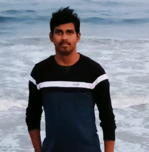

Karthikeyan Sankarapandian
Email: karthikeyansankarapandian@gmail.com | Contact no: 9384199679
Summary:
Professional C# developer with ample amount of experience in developing desktop based
applications. Capable of learning new programming languages and technologies and
completing projects within specified deadlines.
Education:
K.L.N. College of Engineering, Pottapalayam, Tamil Nadu, 2017 passed out, CGPA: 7.786
Skills:
- Programming Languages: C#
- Database: SQLServer, SQLite, Oracle DB
- IDE: Visual Studio
- Technologies: Winforms, WCF
Work Experience:
-
Siemens Technologies And Services Private Limited | Senior Software Engineer |
From May 2022 | Technologies: C#.net, Winforms
- Extensively worked on developing features and resolving bugs on stipulated time.
- Involved and motivated my team to take part in organization level technical events.
- Undertook Software Development and Architecture training- a program for aspiring architects at organization level.
- Actively involved in reviewing PRs from the teammates.
-
Societe Generale Global Solution Centre Private Limited | Software Engineer |
June 2021 - May 2022 | Technologies: C#.Net, Winforms, WCF, Oracle DB
- Worked on an enhancement module for reporting payment flows to one of the downstream applications.
- As part of reporting team, have majorly developed features and fixed bugs which are reported by distinct consumers for reporting to the downstream applications.
-
Infosys Private Limited | Senior Systems Engineer | March 2020 - May 2021 |
Technologies: C#.net, Winforms, WCF, SQL Server, SQLite
- Analyzed and resolved production support tickets.
- Actively involved in getting KT sessions from the client for the above project and prepared the Application Information Document and completed reverse KT for the same.
-
Lucid Imaging Private Limited | Software Engineer | Oct 2017 - Jan 2020 |
Technologies: C#.net, Winforms, MySQL
- Independently analyzed the program specifications as well as designed and created reliable and reusable C# code that conformed to department standards and procedures.
- Worked with tools like Debug Diag and wrote code to simulate and debug heap corruption in applications.
- Worked with other programmers in developing inspection software for machines and in designing and creating controls, windows forms and databases.